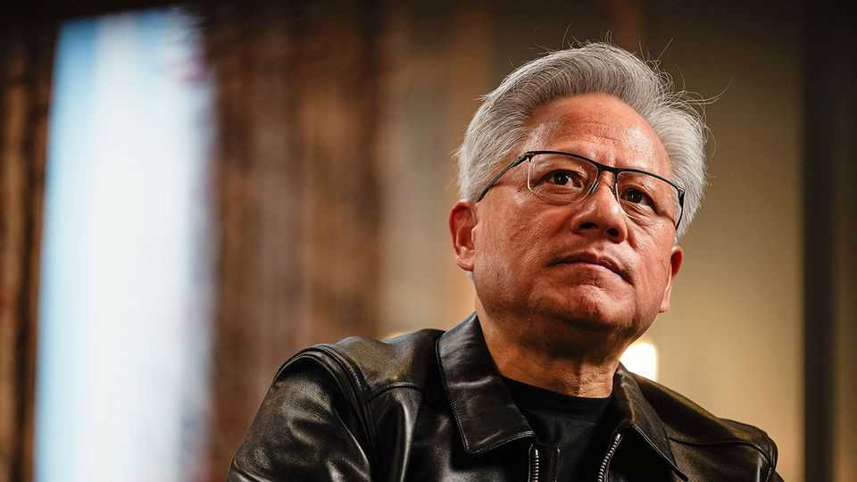

Business

Nov 12th 2026
Nvidia was engulfed in turmoil after Jensen Huang, the chipmaker’s chief executive, admitted to having an extramarital affair with an executive at Megaspeed, a Singaporean cloud-computing company that buys Nvidia’s hardware. American officials suspect the woman is a Chinese agent and that Megaspeed helps China bypass export controls on American chips. The affair has raised questions about whether Nvidia intervened to thwart a government investigation into Megaspeed last year. Donald Trump said the FBI had started an inquiry. As reports surfaced that Mr Huang also had an affair with an executive at Nvidia, the board deliberated over removing him.
Nvidia’s share price plunged in reaction to the news about Mr Huang, unsettling already jittery investors. Chip stocks recently recorded one of their worst days ever, which saw the NASDAQ 100 drop by around 6%. The sell-off came on the heels of the Democrats’ victory in the midterms; the party has pledged to curb the construction of data centres and so slow investment in AI. Stock markets had clawed back some of their losses over subsequent days, though investors remain cautious. Markets in Japan and South Korea also sank.
Investors took some comfort from CoreWeave’s latest earnings, which suggested that its sales remain strong. CoreWeave is one of the neoclouds, a group of fast-growing companies that buy specialist AI chips and rent them out, but are also laden with debt. In October stock markets swooned when CoreWeave raised the prospect of taking on even more debt.
A former employee at OpenAI’s headquarters pleaded not guilty to spying. Prosecutors allege that the man, a Saudi national, had frequent contact with an unnamed member of Saudi Arabia’s royal family.
An updated filing with regulators indicated that Anthropic could be worth $1.4trn at its forthcoming IPO, making it one of the biggest ever. Reports suggest that the huge demand for shares in the firm may actually see its value head towards $1.5trn. The stock is expected to start trading on November 19th.
SoftBank booked a $3.7bn charge against its data-centre investments in America, driving it to its first quarterly net loss in two years. The charge was reportedly related to energy equipment, including gas turbines SoftBank had reserved to power the data centres. Unable to use all the energy SoftBank apparently decided to write off the contracts.
Alibaba confirmed that its subsidiary chips business, T-Head, has filed for an IPO in Hong Kong. T-Head lies at the centre of Alibaba’s thrust into AI and computing; in September it released its next-generation processor. The details of the stock-market listing haven’t been decided yet, but it should enable T-Head to raise its own capital in the markets.
America’s monthly inflation rate was 0.4% in October, more than markets were expecting (the Bureau of Labour Statistics did not calculate an annual rate because the government was shut down in the corresponding month last year). Investors are now all but certain that the Federal Reserve will raise interest rates again in December. Speaking ahead of the latest inflation data Christopher Waller, a Fed governor, suggested the central bank may need to lift its benchmark rate by half a percentage point.
Clare Lombardelli, a member of the Bank of England’s Monetary Policy Committee, said that unless inflationary pressures weaken, interest rates may rise again “in the near term”. The bank recently increased its base rate for the first time in more than three years, lifting it to 4%.
Britain’s economy expanded by 1.9% in the third quarter compared with the same period a year earlier. The Office for National Statistics said this was almost entirely due to strong growth in the services sector.
The value of China’s goods exports surged by 35% year on year in October, as the country continued to pump out chips and AI-related products. China’s cumulative trade surplus for 2026 surpassed $1trn in October, reaching the milestone a month earlier than it did last year.
Skydance outlined the cost savings it expects to achieve from its takeover of Warner Bros. The film-and-TV company expects to save at least $6bn net over the next three years by reducing management layers, scaling AI workflows and streamlining marketing, among other things. The company is already offering voluntary buy-outs to employees ahead of official lay offs.
Elon Musk announced on X that Tesla would be “winding down production of the Cybertruck” from the middle of next year in order to increase output of its robotaxi, the Cybercab. It was unclear if that meant the Cybertruck is being phased out completely. Sales of the futuristic-looking pickup truck, more Terminator than Dukes of Hazzard, have been poor and it has faced several recalls.